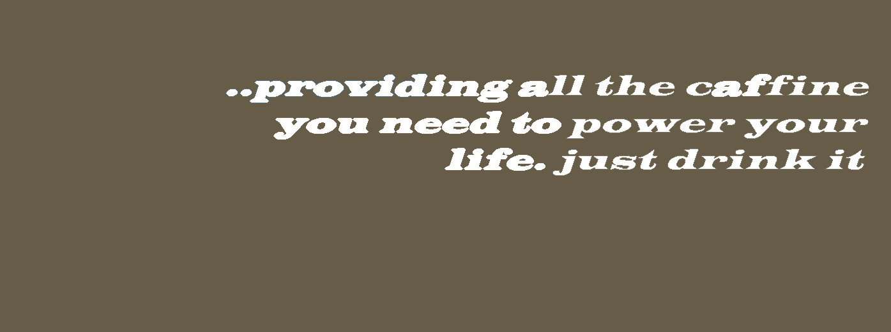
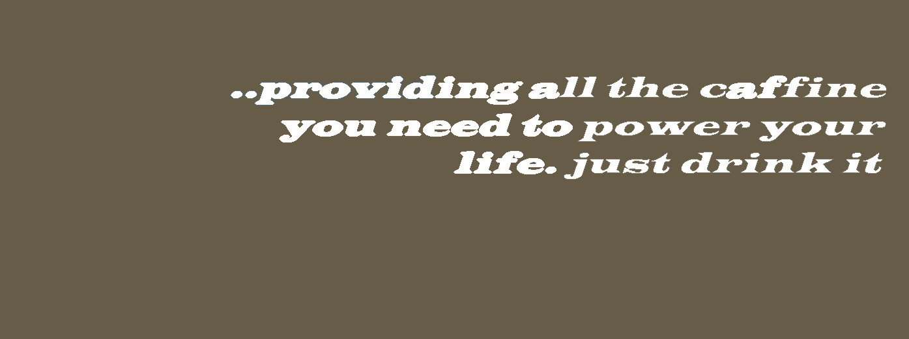

1.Starbuzz launches...Tweet Sip
As promised, today I'm proud to announce that Starbuzz Coffee is launching the Tweet Sip cup, a special Starbuzz Coffee cup that tweets each time you take a sip! Check out my video of our new invention.
 

House Blend, $1.49
Mocha Cafe Latte, $2.35
Cappuccino, $1.89
Chai Tea, $1.85
We proudly serve elixirs brewed by our friends at the Head First Lounge.
Green Tea Cooler, $2.99
Raspberry Ice Concentration, $2.99
Blueberry Bliss Elixir, $2.99
Cranberry Antioxidant Blast, $2.99
Chai Chiller, $2.99
Black Brain Brew, $2.99
As promised, today I'm proud to announce that Starbuzz Coffee is launching the Tweet Sip cup, a special Starbuzz Coffee cup that tweets each time you take a sip! Check out my video of our new invention.
We've replaced a few elements and added a few elements, and in the process, we've added a lot of meaning to our pages. The browser, search engines, and applications for building web pages, can-if they want-be a lot smarter about how they handle different parts of your page. And your page is easier for you, and other web developers, to read. Even though your page looks the same, it's a lot more meaningful under the covers.
It is easy to get confused about which element to use, so we're glad you asked. The element is more generic than , but it's not as generic as For instance, if you're just adding an element so you can style the page, then use a . If you're adding an element to mark up content that forms a well-defined section of related content, then use . And if you have some content that can be reused or distributed independently from the rest of the content on the page, then use content that can be reused or distributed independently from the rest of the content
Most of the time, your and will have a need a header for descriptive or introduction purposes. or at least a heading Think about it: content within anneed a header for descriptive or introduction purposes. that content will need a header for descriptive or introduction purposes. content within anneed a header for descriptive or introduction purposes.